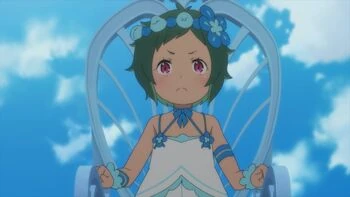

Alegre
Curiosa
Brincalhona
Muito amigável
Apesar de representar o Orgulho, ela não é arrogante como muitas pessoas imaginam. Ela age como uma criança de verdade, com inocência e curiosidade. Sua ideia de justiça é extremamente rígida, o que a torna perigosa mesmo sem parecer malvada. Muitos fãs consideram Thyphon uma das bruxas mais carismáticas justamente pelo contraste entre sua aparência infantil e seu poder aterrorizante. Esse contraste é uma das marcas de Re:Zero: personagens que parecem gentis ou frágeis podem esconder habilidades e ideias extremamente perigosas. Thyphon é um dos melhores exemplos disso.
Typhon é a Bruxa do Orgulho. Sua história de origem é profundamente trágica: ela era filha de um carrasco e, ao acompanhar o trabalho do pai desde muito jovem, desenvolveu uma visão distorcida e ingênua sobre o que é certo e errado.
Julgamento de Culpa: Em vez de julgar ações passadas, Typhon lê os sentimentos de culpa e as "consciências pesadas" das pessoas ao seu redor.
Desmembramento Físico: Se ela determinar que alguém é "culpado" — mesmo por algo pequeno —, ela consegue desmembrar ou fatiar o corpo do alvo com um único toque ou comando.